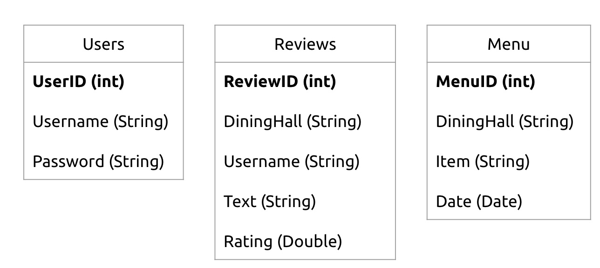

TrojanBytes
TrojanBytes is a web application designed to enhance the dining experience for USC students by providing a platform for sharing and browsing reviews of meals served at the university's dining halls—EVK, McCarthy, and Parkside.
With TrojanBytes, students can explore genuine feedback and ratings from their peers, ensuring they make informed meal choices before heading to the dining hall. The app also encourages community participation by allowing users to share their own experiences, recommendations, and thoughts on the dishes they've tried.
During my work on TrojanBytes, I worked with team members to implement a seamless and interactive platform that fosters smarter dining decisions and a more connected campus community.
Request access for source code!
WHAT:
CSCI 201 (Principles of Software Development) Group Project
WHEN:
Fall 2023
Tech Stack
Frontend:
- Framework: React
- Styling: React-Bootstrap
- Navigation: React Router DOM
- State Management:
- Local Storage
- React Hooks: useState(), useEffect()
Backend:
- Development: Spring Boot
- Data Handling: XML
Web Scraping:
- Python for extracting data from USC Dining Hall website
APIs and Security:
- API headers to bypass CORS
Database:
- MySQL (used for storing user, review, and menu data)
Version Control and Collaboration Tools:
- Zoom
- Github & Git
- Jira
- Notion
Design Tools:
- Figma
Development Tools:
- Visual Studio Code
- GitHub Desktop
Data Structures Used
- Arrays
- JSON object -> Map ()
- ArrayList
- Set
- List
- HashMap
Frontend
Login/Signup Page
- Non-logged-in users can browse menu items and read existing reviews but are restricted from submitting their own reviews.
- Logged-in users have full access to the platform, including the ability to view menu items, read reviews, and contribute by adding their own reviews.
React Features Used
- Bootstrap Grid System:
- Utilized to create responsive layouts with structured components such as:
- Containers: Define the layout boundaries
- Rows: Organize content horizontally
- Cols (Columns): Divide the layout into equal parts or customized widths
- Components:
- Menu (List Component): Displays a list of menu items for browsing available dining options
- Reviews (Card Component): Displays individual reviews as cards, featuring user feedback and ratings
- ReviewList (List Component): Organizes and displays multiple review cards in a structured list format
User Profile Dashboard: Developed a clean, user-centric profile page to display personalized user information such as username and profile picture
"Enjoyed an amazing meal at Parkside? ... Or faced some culinary disappointment at EVK?
Share your dining experiences and help fellow Trojans make better meal choices!"
Backend
Databases
Web Scraping
My team and I developed a web scraping solution to streamline menu data collection from USC's Residential Dining Halls. Using data from USC Hospitality's website, the scraper pulls information such as dining hall names, menu items, and dates into a structured database.
- Extracted dining hall data by leveraging the website’s layout and identifying parent classes like fw-accordion-title-inner and hsp-accordion-container
- Performed data cleaning by removing blanks and isolating menu item names for clarity.
- Formatted the extracted data into a Python dictionary for structured processing and exported it to a MySQL database for further use.
This automation not only ensured accurate and efficient data retrieval but also enhanced the overall functionality of the project by providing up-to-date menu information for users.
Multithreading: A Key Feature
Multithreading plays a crucial role in ensuring seamless and efficient operation within the platform.
By leveraging multithreading, the system supports multiple concurrent actions, such as:
- Simultaneous User Actions:
- Multiple users can log in at the same time without delays.
- Multiple users can add reviews concurrently, ensuring real-time updates.
- Multiple users can view ratings simultaneously, providing a smooth browsing experience.
- Database Synchronization:
- All updates to the database, such as new reviews or ratings, are instantly visible to all users. This ensures that the platform reflects real-time data for a consistent and up-to-date user experience.
Multithreading is an essential feature that enhances the platform's scalability and reliability, supporting a dynamic and interactive environment for users.
Network Communication
The project implements essential networking functionalities to ensure a seamless and interactive user experience:
- Users can create new accounts with a unique username and password for personalized access.
- Secure login functionality allows users to access their accounts with their credentials.
- Interactive Features:
- Users can add reviews to specific dining halls.
- View a curated list of reviews, ratings, and menu items for any dining location.
These networking capabilities are key to fostering user engagement and building a connected platform for sharing dining experiences.